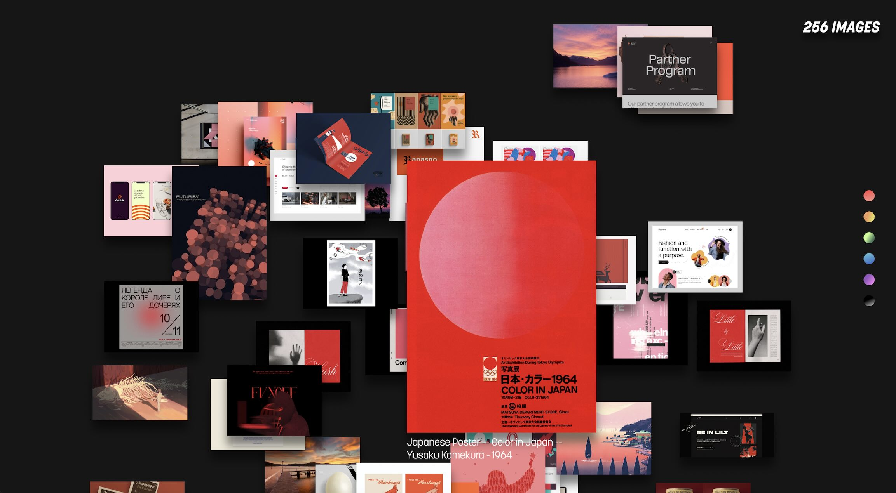

Website Overview
scroll

This is an experimental website I created to mimic and visualize my brainstorming process. I used Airtable to build a custom API library and collected a total of 256 images that I’ve used as inspiration over the years. All the images are stacked on the homepage, and users can freely drag them around the screen to reorganize—just like iterating on design ideas. The color dots on the right side serve as a simple filter: users can click on a color they like to display only the images that share that hue.